Flashing the R500 with a BeagleBone Black
Initial flashing instructions for R500.
This guide is for those who want libreboot on their ThinkPad R500
while they still have the original Lenovo BIOS present. This guide
can also be followed (adapted) if you brick your R500, to know how
to recover.
Before following this section, please make sure to setup your libreboot ROM properly first.
Although ROM images are provided pre-built in libreboot, there are some modifications that
you need to make to the one you chose before flashing. (instructions referenced later in
this guide)
NOTE: This board is unsupported in libreboot 20150518. To use it in libreboot, for now, you
must build for it from source using the libreboot git repository.
Back to main index
Serial port
EHCI debug might not be needed. It has been reported that the docking station
for this laptop has a serial port, so it might be possible to use that instead.
A note about CPUs
ThinkWiki has a list of CPUs
for this system. The Core 2 Duo P8400, P8600 and P8700 are believed to work in libreboot.
The Core 2 Duo T9600 was confirmed to work (on a different laptop, but still GM45), so the T9400 probably also works.
The Core 2 Duo T5870/5670 and Celeron M 575/585 are untested!
Quad-core CPUs
Incompatible. Do not use.
A note about GPUs
ThinkWiki lists
two possible GPUs: Intel or ATI. Only the Intel GPUs work in libreboot; the ATI
GPUs require a proprietary Video BIOS, and so those are unsupported in libreboot.
On other GM45 laptops in libreboot (e.g. T400, T500), so-called switchable graphics
is used, which means that the laptop will have both an ATI and Intel GPU, or it will
only have Intel, depending on which variation you have. On the systems with ATI and Intel,
you can disable the ATI GPU and use only the Intel GPU, which works in libreboot.
It is unknown whether R500 laptops with an ATI GPU still have an Intel GPU, where you could
disable the ATI GPU and use the Intel GPU. These are budget laptops, so it's highly likely
that Lenovo decided on this model to ship with one GPU or the other, but not both (GPUs cost money).
It is **HIGHLY** recommended, when ordering an R500 laptop, to **ENSURE** that the
one you're ordering has an Intel GPU.
CPU paste required
See #paste.
Flash chip size
Use this to find out:
# dmidecode | grep ROM\ Size
It is believed that all R500 laptops have only SOIC-8 (4MiB) chips.
Back to top of page.
MAC address
Unlike other GM45 thinkpads, the R500 has a different onboard gigabit NIC,
where the MAC address is built-in. You do not need to change the MAC address
at all on this laptop; simply flash the provided ROM images, as-is.
Initial BBB configuration
Refer to bbb_setup.html for how to
setup the BBB for flashing.
The following shows how to connect clip to the BBB (on the P9 header), for SOIC-8 (clip: Pomona 5250):
POMONA 5250 (correlate with the BBB guide)
=== VGA and ethernet socket ===
18 - - 1
22 - - NC
NC - - 21
3.3V (PSU) - - 17 - this is pin 1 on the flash chip
=== DVD drive ===
This is how you will connect. Numbers refer to pin numbers on the BBB, on the plugs near the DC jack.
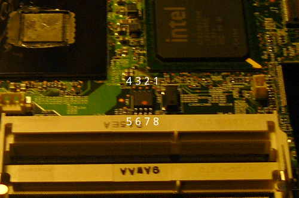
Disassembly
 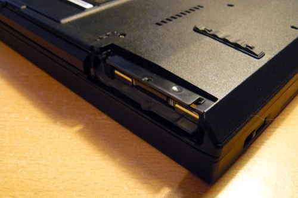
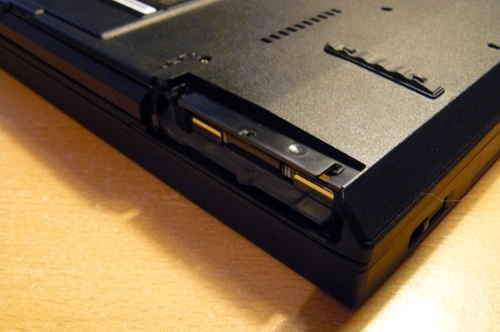
 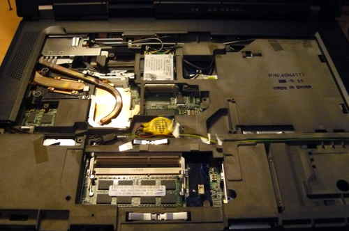
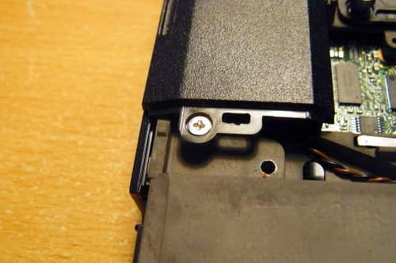
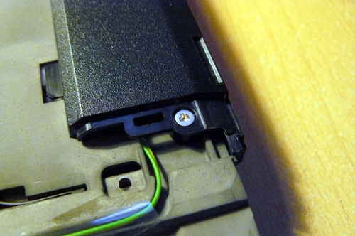
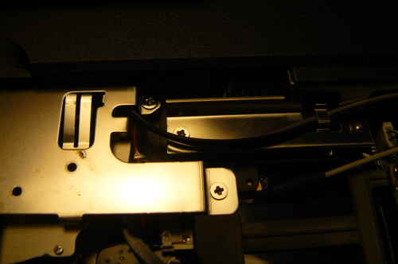
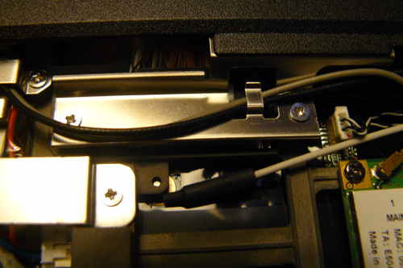
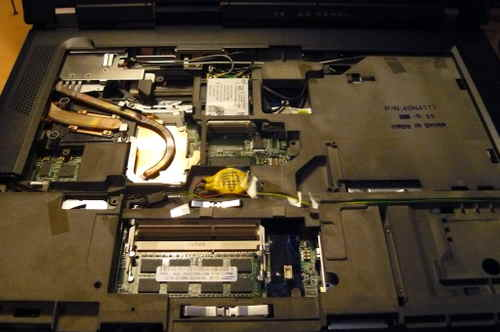
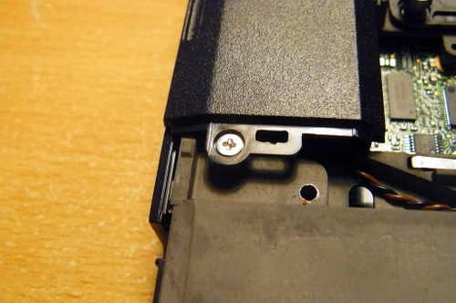
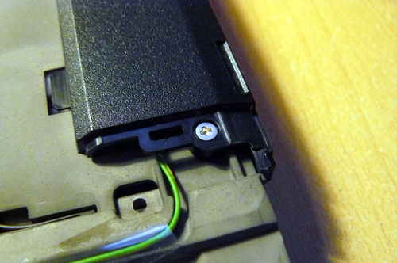
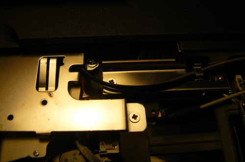
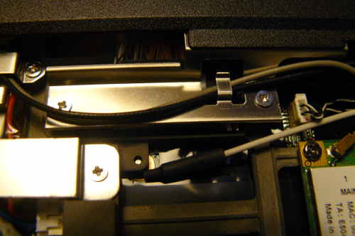

 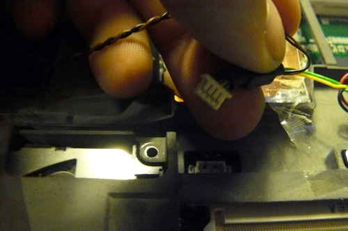
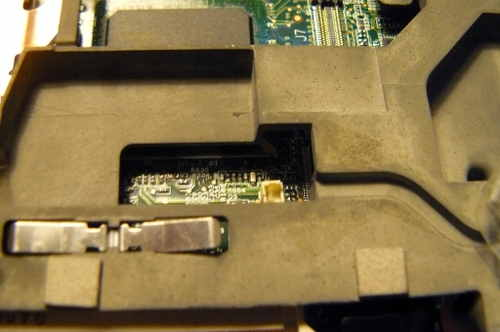
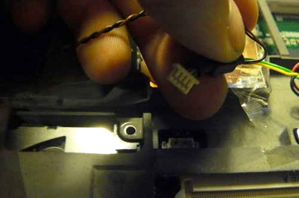
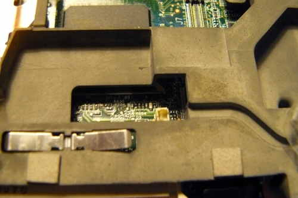
 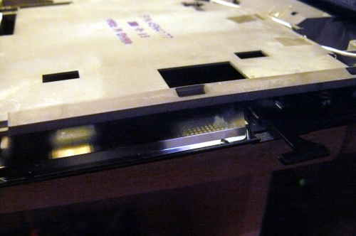
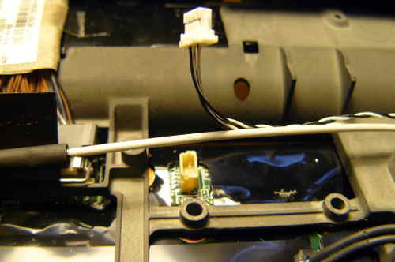
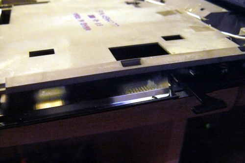
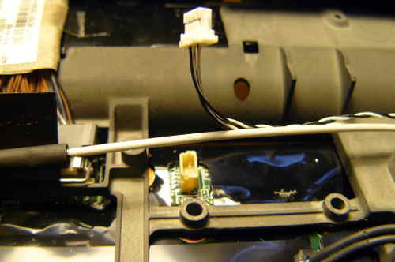


 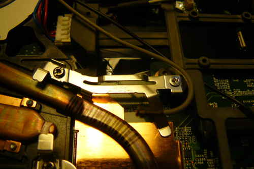
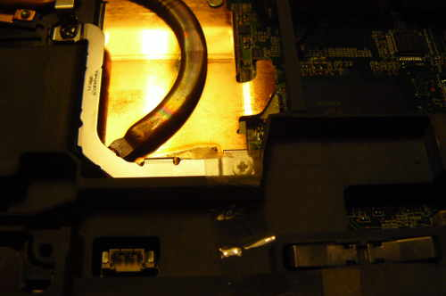
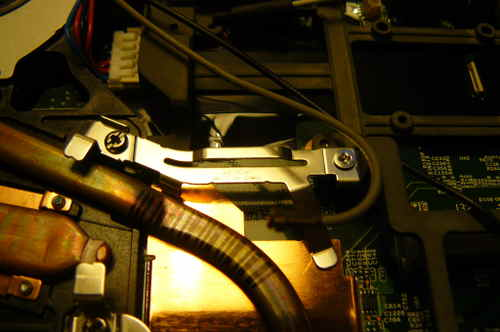
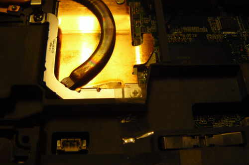
 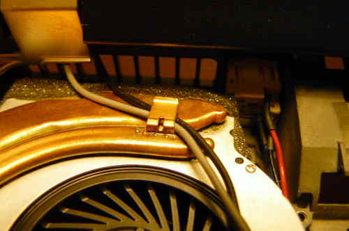
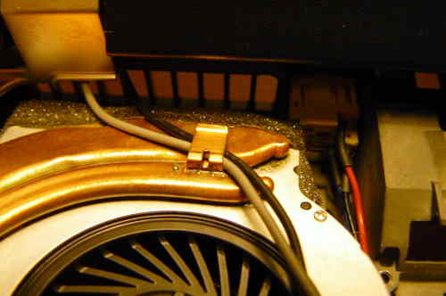
 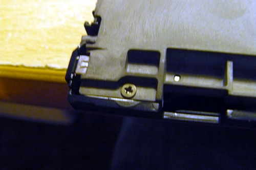
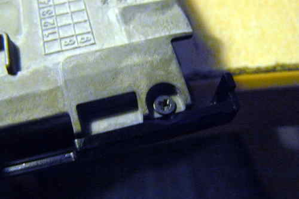
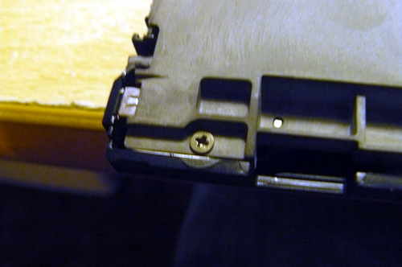
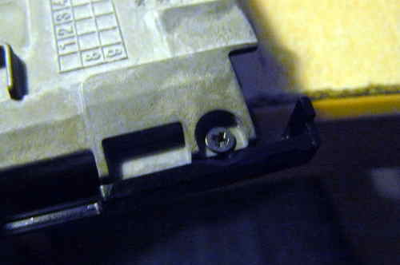
 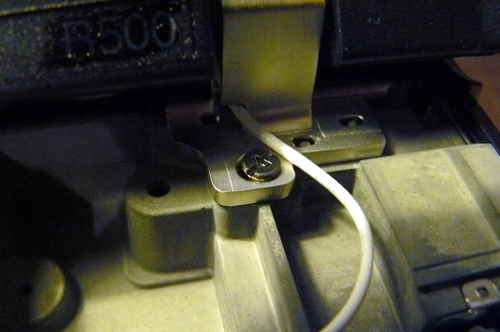
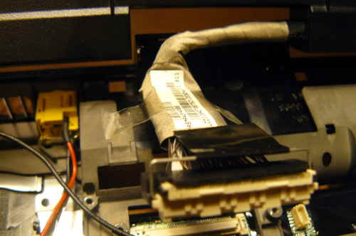
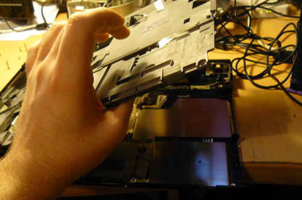
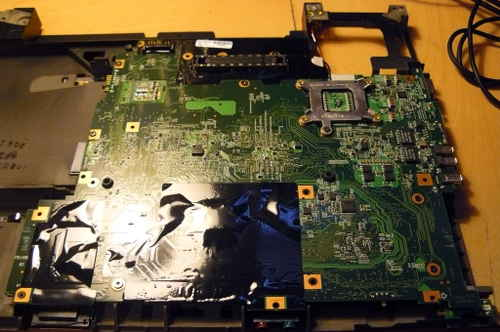
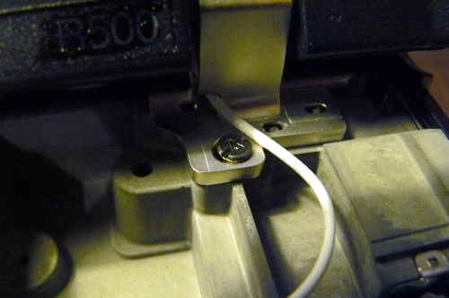
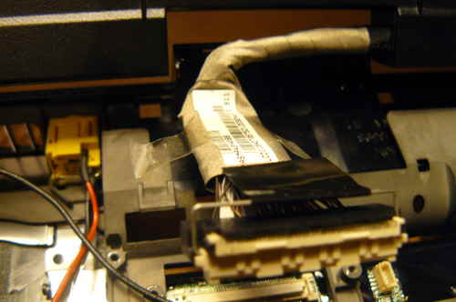
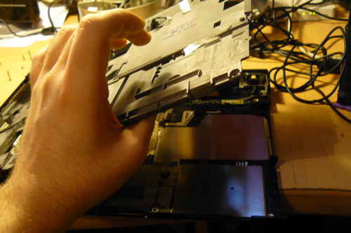
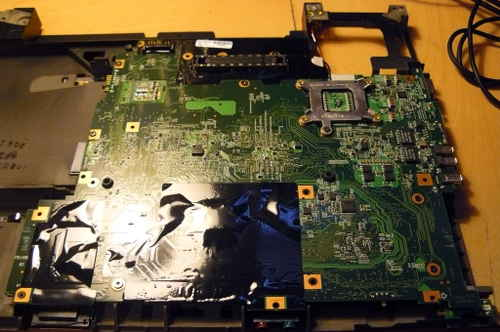

Remove the motherboard from the cage, and the SPI flash
chip will be next to the memory slots:

The following image is for illustration only, to show how a SOIC-8 clip is connected.
This photo is from a T500, which has a different arrangement to the R500:

Connect your programmer, then connect GND and 3.3V


A dedicated 3.3V PSU was used to create this guide, but
at ATX PSU is also fine:

Of course, make sure to turn on your PSU:

Now, you should be ready to install libreboot.
Flashrom binaries for ARM (tested on a BBB) are distributed in libreboot_util. Alternatively,
libreboot also distributes flashrom source code which can be built.
Log in as root on your BBB, using the instructions in bbb_setup.html#bbb_access.
Test that flashrom works:
# ./flashrom -p linux_spi:dev=/dev/spidev1.0,spispeed=512
In this case, the output was:
flashrom v0.9.7-r1854 on Linux 3.8.13-bone47 (armv7l)
flashrom is free software, get the source code at http://www.flashrom.org
Calibrating delay loop... OK.
Found Macronix flash chip "MX25L6405(D)" (8192 kB, SPI) on linux_spi.
Found Macronix flash chip "MX25L6406E/MX25L6436E" (8192 kB, SPI) on linux_spi.
Found Macronix flash chip "MX25L6445E/MX25L6473E" (8192 kB, SPI) on linux_spi.
Multiple flash chip definitions match the detected chip(s): "MX25L6405(D)", "MX25L6406E/MX25L6436E", "MX25L6445E/MX25L6473E"
Please specify which chip definition to use with the -c <chipname> option.
How to backup factory.rom (change the -c option as neeed, for your flash chip):
# ./flashrom -p linux_spi:dev=/dev/spidev1.0,spispeed=512 -r factory.rom
# ./flashrom -p linux_spi:dev=/dev/spidev1.0,spispeed=512 -r factory1.rom
# ./flashrom -p linux_spi:dev=/dev/spidev1.0,spispeed=512 -r factory2.rom
Note: the -c option is not required in libreboot's patched flashrom, because
the redundant flash chip definitions in flashchips.c have been removed.
Now compare the 3 images:
# sha512sum factory*.rom
If the hashes match, then just copy one of them (the factory.rom) to a safe place (on a drive connected to another system, not
the BBB). This is useful for reverse engineering work, if there is a desirable behaviour in the original firmware
that could be replicated in coreboot and libreboot.
Now flash it:
# ./flashrom -p linux_spi:dev=/dev/spidev1.0,spispeed=512 -w path/to/libreboot/rom/image.rom -V

You might see errors, but if it says Verifying flash... VERIFIED at the end, then it's flashed and should boot.
If you see errors, try again (and again, and again); the message Chip content is identical to the requested image
is also an indication of a successful installation.
Example output from running the command (see above):
flashrom v0.9.7-r1854 on Linux 3.8.13-bone47 (armv7l)
flashrom is free software, get the source code at http://www.flashrom.org
Calibrating delay loop... OK.
Found Macronix flash chip "MX25L6405(D)" (8192 kB, SPI) on linux_spi.
Reading old flash chip contents... done.
Erasing and writing flash chip... FAILED at 0x00001000! Expected=0xff, Found=0x00, failed byte count from 0x00000000-0x0000ffff: 0xd716
ERASE FAILED!
Reading current flash chip contents... done. Looking for another erase function.
Erase/write done.
Verifying flash... VERIFIED.
Back to top of page.
Thermal paste (IMPORTANT)
Because part of this procedure involved removing the heatsink, you will need to apply new paste.
Arctic Silver 5 is ok. You will also need isopropyl alcohol and an anti-static cloth to clean with.
When re-installing the heatsink, you must first clean off all old paste with the alcohol/cloth.
Then apply new paste. AS5 is also much better than the default paste used on these systems.

NOTE: the photo above is for illustration purposes only, and does not show how to properly apply the thermal paste.
Other guides online detail the proper application procedure.
Wifi
The R500 typically comes with an Intel wifi chipset, which does not
work without proprietary software. For a list of wifi chipsets that
work without proprietary software, see
../hcl/index.html#recommended_wifi.
Some R500 laptops might come with an Atheros chipset, but this is 802.11g only.
It is recommended that you install a new wifi chipset. This can only
be done after installing libreboot, because the original firmware has
a whitelist of approved chips, and it will refuse to boot if you
use an 'unauthorized' wifi card.
The following photos show an Atheros AR5B95 being installed, to
replace the Intel chip that this R500 came with:


WWAN
If you have a WWAN/3G card and/or sim card reader, remove them permanently.
The WWAN-3G card has proprietary firmware inside; the technology is
identical to what is used in mobile phones, so it can also track your movements.
Not to be confused with wifi (wifi is fine).
Memory
You need DDR3 SODIMM PC3-8500 RAM installed, in matching pairs
(speed/size). Non-matching pairs won't work. You can also install a
single module (meaning, one of the slots will be empty) in slot 0.
Make sure that the RAM you buy is the 2Rx8 density.
This page might be useful for RAM compatibility info
(note: coreboot raminit is different, so this page might be BS)
The following photo shows 8GiB (2x4GiB) of RAM installed:

Copyright © 2015 Francis Rowe <info@gluglug.org.uk>
Permission is granted to copy, distribute and/or modify this document
under the terms of the GNU Free Documentation License, Version 1.3
or any later version published by the Free Software Foundation;
with no Invariant Sections, no Front-Cover Texts, and no Back-Cover Texts.
A copy of the license can be found at ../gfdl-1.3.txt
Updated versions of the license (when available) can be found at
https://www.gnu.org/licenses/licenses.html
UNLESS OTHERWISE SEPARATELY UNDERTAKEN BY THE LICENSOR, TO THE
EXTENT POSSIBLE, THE LICENSOR OFFERS THE LICENSED MATERIAL AS-IS
AND AS-AVAILABLE, AND MAKES NO REPRESENTATIONS OR WARRANTIES OF
ANY KIND CONCERNING THE LICENSED MATERIAL, WHETHER EXPRESS,
IMPLIED, STATUTORY, OR OTHER. THIS INCLUDES, WITHOUT LIMITATION,
WARRANTIES OF TITLE, MERCHANTABILITY, FITNESS FOR A PARTICULAR
PURPOSE, NON-INFRINGEMENT, ABSENCE OF LATENT OR OTHER DEFECTS,
ACCURACY, OR THE PRESENCE OR ABSENCE OF ERRORS, WHETHER OR NOT
KNOWN OR DISCOVERABLE. WHERE DISCLAIMERS OF WARRANTIES ARE NOT
ALLOWED IN FULL OR IN PART, THIS DISCLAIMER MAY NOT APPLY TO YOU.
TO THE EXTENT POSSIBLE, IN NO EVENT WILL THE LICENSOR BE LIABLE
TO YOU ON ANY LEGAL THEORY (INCLUDING, WITHOUT LIMITATION,
NEGLIGENCE) OR OTHERWISE FOR ANY DIRECT, SPECIAL, INDIRECT,
INCIDENTAL, CONSEQUENTIAL, PUNITIVE, EXEMPLARY, OR OTHER LOSSES,
COSTS, EXPENSES, OR DAMAGES ARISING OUT OF THIS PUBLIC LICENSE OR
USE OF THE LICENSED MATERIAL, EVEN IF THE LICENSOR HAS BEEN
ADVISED OF THE POSSIBILITY OF SUCH LOSSES, COSTS, EXPENSES, OR
DAMAGES. WHERE A LIMITATION OF LIABILITY IS NOT ALLOWED IN FULL OR
IN PART, THIS LIMITATION MAY NOT APPLY TO YOU.
The disclaimer of warranties and limitation of liability provided
above shall be interpreted in a manner that, to the extent
possible, most closely approximates an absolute disclaimer and
waiver of all liability.